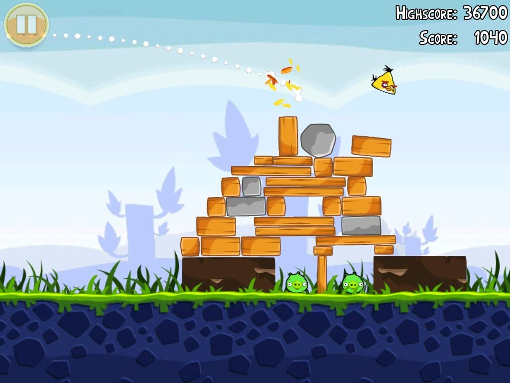

Osa 1:
Miksi ohjelmointi on tärkeää?
Luet Koodi2016:n verkkoversiota. Olemme halunneet tarjota oppaan koko sisällön selaimella ja älypuhelimilla luettavana tekstinä, josta on helppo halutessaan leikata ja liimata sisältöä muualle. Jos kaipaat visuaalisesti näyttävämpää esitystä – ja vaikket kaipaisikaan – kannattaa tutustua myös oppaan näköisversioon!
Johdanto
Heidän nuoruutensa tulee olemaan aivan erilainen kuin sinun tai minun. Kuten myös heidän aikuisuutensa. Siis lasten, jotka aloittavat koulun syksyllä 2016. He tulevat oppimaan 7-vuotiaasta alkaen, miten tietokoneen avulla rakennetaan asioita.
Miten koneelle annetaan ohjeita siitä, kuinka piirtää kokonainen maailma elokuvaan? Kuinka kone opetetaan selvittämään, mikä tauti mummoa vaivaa?
Suomalaisten ihmisten, yritysten ja koko maan tulevaisuuteen vaikuttaa, innostuvatko nämä 2000-luvulla syntyneet ihmiset ohjelmoinnista.
Saavatko he jo nuorena vihiä siitä, mitä kaikkea pelkällä näppäimistöllä voi rakentaa, parantaa ja luoda?
Kerrotaanko heille siitä kaikesta innostavasti?
Opetusministeri Krista Kiuru linjasi tammikuussa 2014, että ohjelmointi tulee osaksi peruskoulun opetusohjelmaa.
Muutos on tärkeä. Opetussuunnitelmaa muutetaan kerran noin 10 vuodessa. Seuraava muutos tapahtuu 2016, joten sitä seuraava kierros olisi jo auttamattoman myöhässä. Esimerkiksi Britanniassa ohjelmointia aletaan opettaa jo syksyllä 2014.
2016 suomalaiset koulut ottavat käyttöön Opetushallituksen johdolla muokatun opetussuunnitelman, joka määrittelee, mitä asioita nykynuorten tulee koulussa koodaamisesta oppia.
Nyt lukemasi verkkosivusto (ja sen painettu opaskirjaversio) on syntynyt halusta vaikuttaa siihen, miten ohjelmointia lähestytään koulussa.
Mistä tässä oppaassa sitten on kyse?
Olemme halunneet tehdä tiiviin ja ymmärrettävän esityksen neljästä asiasta:
- Mitä ohjelmointi on ja miksi sen opettaminen on niin tärkeää?
- Miten opetussuunnitelma muuttuu ja miksi?
- Miten ohjelmointia voi opettaa peruskoulussa?
- Mitä muut kuin koululaitos voivat tehdä?
Ensimmäinen kohta – ja samalla oppaan ensimmäinen osio – liittyy siihen, että vaikka monella on jonkinlainen käsitys siitä mitä ohjelmointi on (”tietokoneella kirjoitetaan jotain, ja tuloksena syntyy ohjelmia tietokoneille ja älypuhelimille”), käsitys on hatara. Kynnys päästä aivan perusymmärryksestä pykälää pidemmälle on suuri – varsinkin, jos ei ole tiedossa, miksi asiasta pitäisi olla ylipäätään kiinnostunut.
Muutos on tärkeä. Opetussuunnitelmaa muutetaan kerran noin 10 vuodessa. Seuraava muutos tapahtuu 2016, joten sitä seuraava kierros olisi jo auttamattoman myöhässä.
Haluamme siis tarjota lukijalle ikään kuin tiiviin lunttilapun: tästä on yleisesti ottaen kyse, esimerkiksi tältä ohjelmakoodi voi näyttää, tällaisia asioita ohjelmoimalla voi saada aikaan.
Toisessa osassa valotamme, miten opetussuunnitelma näillä näkymin muuttuu syksyllä 2016. Vastaamme myös opettajien pelkoihin ja kysymyksiin aiheesta.
Kolmannessa osassa tarjoamme konkreettisen apumme peruskoulussa käsillä olevaan muutokseen: Tällaisia asioita ohjelmoinnin opetuksessa kannattaa huomioida, tällaisia apuvälineitä voi käyttää. Tällaiset harjoitukset innostavat, täältä niitä löytää.
Neljännessä osassa esitämme haasteita päättäjille, koodareille, vanhemmille ja meille kaikille.
Olemme laatineet esityksemme pohjaten kymmeniin haastatteluihin opettajien ja opetuksen asiantuntijoiden sekä tietenkin ohjelmoijien ja ohjelmoinnin opetuksen tuntijoiden kanssa. Pohjaamme myös verkossa saatavilla oleviin tietolähteisiin ja projektin aikana lukemattomilta vapaaehtoisilta tulleisiin ideoihin.
Ohjelmoinnin opettamiseen liittyy selvästi erilaisia epävarmuuksia. Siksi olemme pyrkineet olemaan mahdollisimman kouriintuntuvia.
Totuuden hetki koulussa on aina opettajan ja oppilaan välinen vuorovaikutus.
Oppilaan kannalta tavoitteenamme on, että hän saisi peruskoulussa – jo lapsena – mahdollisuuden innostua ohjelmoinnista.
Tässä osiossa lähestytään ohjelmoinnin opettamista peruskoulussa kahden pääharjoituskategorian kautta. Nämä ovat yhtäältä leikit sekä toisaalta erilaiset verkossa tarjolla olevat ympäristöt ohjelmointia ja sen opiskelua varten.
Mitä ohjelmointi on?
Jo kuusivuotias saattaa osata tehdä voileivän, mutta tietokoneelle se on vaikeaa. Minkä leivän valitsen? Milloin lopetan leikkaamisen? Mitä tapahtuu, jos juusto loppuu kesken?
Kun tietokone – tai leivän tekemisen tapauksessa vaikkapa tietokoneen ohjaama robotti – laitetaan leiväntekoon, pienkinkin yksityiskohta on selitettävä täydellisen tarkasti ja yksikäsitteisesti. Kaikkiin mahdollisesti eteen tuleviin pulmiin on varauduttava.
Mutta selittäminen kannattaa.
Kun tietokone lopulta osaa tehdä yhden leivän, se tekee sen täydellisesti. Joka kerta. Toisin kuin kuusivuotias tai edes aikuinen, yhden voileivän tehtyään tietokone voi tehdä tuhansia ja taas tuhansia leipiä. Se ei koskaan kyllästy.
Tietokone on kärsivällinen ja tarkka, varma ja nopea. Siksi se on loistava työkumppani tekemään asioita ihmisen ohjeiden perusteella.
Ihminen käskee tietokonetta
Tietokone ei tiedä itse mitään.
Tai tarkemmin sanoen se ei tiedä mitään, mitä ihminen ei ole sille opettanut (tai edistyneimpien tekoälyjen tapauksessa: mitä ihminen ei ole sitä opettanut oppimaan). Se ei myöskään tee mitään, mitä ihminen ei ole käskenyt sitä tekemään.
Se, että voimme pelata videopeliä, surffata netissä tai ajaa nykyaikaista autoa perustuu sille, että ohjelmoija on kertonut tietokoneelle tarkalleen, miten toimia.
Pelin tapauksessa ohjelmoija kertoo koneelle, millaisia hahmoja ruudulle piirretään, minkä näköisessä maailmassa ne liikkuvat, ja mitä hahmon pitää ruudulla tehdä, kun pelaaja painaa ohjaimesta nappia.
Netti puolestaan koostuu toisiinsa yhteydessä olevista tietokoneista. Ihmisen on pitänyt kertoa koneille, millaisten sääntöjen mukaisesti ne lähettävät toisilleen dataa, josta taas muodostuvat lopulta käyttäjän ruudulla näkyvät tekstit, kuvat ja videot.
Dataa ei saa hävittää matkalla, ja yksittäisen verkkosivun pitäisi toimia hyvin sekä matkapuhelimella että videotykillä katseltuna. Koneelle on annettava ohjeet eri tilanteisiin.
Kaupasta saa jo auton, joka osaa parkkeerata itsensä. Pian meillä on autoja, jotka ajavat kaupungissa itse itseään. Nämä molemmat asiat ovat mahdollisia, koska ihminen on pohtinut kaikkia mahdollisia tilanteita, joita autoa ajaessa voi tulla vastaan. Sitten hän on antanut koneelle ohjeet siitä, miten näissä tilanteissa toimitaan.
Miten kaikki nämä asiat opetetaan tietokoneelle?
Sitä kutsutaan ohjelmoinniksi.
Ohjelmointi on ohjeiden antamista tietokoneelle
Ohjelmointia voisi verrata siihen, että ruoanlaiton osaava kokki kirjoittaa reseptin aloittelevalle leipurille.
Ohjeiden on oltava niin täsmällisiä, että niitä ei voi mitenkään ymmärtää väärin, jos niitä seuraa täydellisen tarkasti. Ohjeiden on oltava tarpeen mukaan muutettavia. Niiden on katettava kaikki mahdolliset tilanteet ja kysymykset, jotka uudelle leipurille saattavat tulla mieleen. Ohjeiden on myös oltava juuri oikeassa järjestyksessä.
Ohjelmointikieliä on satoja, mutta niiden kaikkien perusajatus on, että ohjelma saa tietoja – esimerkiksi ihmiseltä –, käsittelee tiedot annettujen sääntöjen mukaan ja saa aikaan halutun lopputuloksen.
Kaikkein teknisimmällä tasolla ajateltuna tietokoneessa on muistipaikkoja, joihin voi tallentaa ykkösiä ja nollia. Lyhyiden tai hyvin, hyvin pitkien ykkösten ja nollien jonojen avulla voidaan kuvata esimerkiksi kirjaimia, koneelle annettavia komentoja tai vaikkapa kokonaisia valokuvia.
Kaikki asiat joiden parissa tietokone työskentelee – Googlelle annetut hakusanat, uuden ihmisen kirjaaminen Facebook-kavereiden listaan sekä herätyskellon soiminen – kääntyvät lopulta jonoihin ykkösiä ja nollia, jotka tietokone käsittelee.
Ohjelmoija ei kuitenkaan kirjoita ykkösiä ja nollia. Hän naputtelee hitusen normaaliin puhekieleen verrattavissa olevia komentoja, jotka kone ymmärtää, koska ne on merkitty tarkalleen yhteisesti sovitulla tavalla.
Osa kielistä on nopeakäyttöisiä, osa on mahdollisimman luotettavia. Osaa voi lukea kuin englantia.
Kielet ovat kehittyneet kuin talonrakennustarvikkeet: jos joskus on pitänyt aloittaa valamalla omat tiilensä, nyt taloja rakennetaan valmiista elementeistä. Nykyohjelmoijat rakentavat vankkojen perustusten päälle, niin paljon helppokäyttöisemmiksi ja enemmän valmiita palikoita sisältäväksi esimerkiksi työelämässä käytettävät ohjelmointikielet ovat kehittyneet muutamassa vuosikymmenessä.
Kuten missä tahansa kielessä, myös ohjelmointikielissä on omat sanastonsa ja kielioppinsa.
Kuten missä tahansa kielissä, myös ohjelmointikielissä on oma sanastonsa ja kielioppinsa. Koodi muodostuu kullekin ohjelmointikielelle kuuluvista ilmaisuista (tätä kutsutaan syntaksiksi), sekä sanoista ja kuvauksista, jotka ohjelmoija luo omiin tarpeisiinsa kielen sääntöjen puitteissa.
Koodia luetaan rivi riviltä, mutta rivien joukot muodostavat kokonaisuuksia, jotka edustavat jotain tiettyä tehtävää. Yhdellä rivillä saatetaan esimerkiksi tallentaa muuttujaan tietty lukuarvo, mutta yhdistettynä tuo rivi ja sen yllä ja alla olevat rivit voivat yhdessä muodostaa kokonaisuuden, jossa esimerkiksi pankin tietokanta saa tietää, että ihmisen pankkitilille talletetaan rahaa. Tällöin esimerkiksi muuttujaan ”saldo” tallennetaan lukuarvo siitä, paljonko tilillä on talletuksen jälkeen rahaa.
Jos kuulostaa monimutkaiselta, ei huolta. Tästä kaikesta on tuonnempana esimerkkejä!
Hyvällä ohjelmoijalla on rikas sanavarasto eli käsitys ohjelmointikielen tarjoamista työkaluista. Eikä haittaa, vaikka osaisi useampaa kieltä. Teknologia ja kielet myös kehittyvät koko ajan. Siksi ohjelmoija saa käyttöönsä vuosi vuodelta tehokkaampia työkaluja pulmiensa ratkaisuun.
Nykyaikainen ohjelmointi on luovaa ongelmanratkaisua. Ohjelmoijan tehtävä on ratkaista ongelma, esimerkiksi rahan siirto pankin tietojärjestelmässä tilillä toiselle. Tätä varten ohjelmoija muuttaa ongelman pala palalta muotoon, jonka tietokone ymmärtää.
Usein ohjelmoijan tehtävänä on kirjoittaa ohjelma, joka ottaa vastaan tietoa, käsittelee sitä ja tulostaa ulos uutta tietoa.
Esimerkiksi uuden kirjan lisääminen ostoskoriin Amazonin verkkokirjakaupassa saa aikaan Amazonin tietokoneilla uusia pieniä komentoja. Niistä yksi muuttaa asiakkaan ostoskorin sisältämien kirjojen lukemaa, toinen muokkaa verkkokaupassa jäljellä olevien kirjojen määrää ja kolmas päivittää listaa kirjoista, joita asiakkaalle jatkossa suositellaan.
Tietokulma: Hyvin lyhyt ohjelmointisanasto
Tuntuvatko ohjelmoinnin käsitteet solmuisilta? Tässä esimerkkejä siitä, mitä ne käytännössä tarkoittavat.
Tietokone.
Tietokoneen tehtävä on yksinkertaistettuna ottaa vastaan tietoa, suorittaa ohjelma, joka käsittelee tietoa ihmisen kannalta aiempaa hyödyllisempään muotoon ja näyttää lopputulos. Ohjelmoijan tehtävänä on varmistaa, että tietokone saa tiedon muodossa, jonka se ymmärtää, kirjoittaa ohjelma jonka tietokone ymmärtää – ja ihailla lopputulosta.
Muuttuja.
Muuttuja on ohjelmakoodissa nimetty paikka, jonka sisälle voi tallentaa erilaista tietoa. Tieto voi olla esimerkiksi numero, pätkä tekstiä tai tieto siitä, onko jokin väite totta tai ei.Ajatellaan vaikkapa tilannetta, jossa asiakas tulee pankkivirkailijan luo ja antaa tilinumeronsa:
Virkailijan syöttämä tilinumero kulkeutuu pankin tietokantaan, jossa ohjelmisto tarkistaa, löytyykö tietyllä tilinumerolla tietokannasta tili. Tällöin tietty muuttuja saa arvon ”totta” viitaten siihen, että kyseinen tili todella on juuri tässä pankissa.
Seuraavaksi toiseen muuttujaan voidaan tallentaa esimerkiksi tieto siitä, paljonko tilillä on rahaa ja välittää muuttujan mukana tieto pankkivirkailijan näytölle. Virkailija voi tällöin kertoa saldon tilinumeron antaneelle asiakkaalle.
Algoritmi.
Algoritmi on kuvaus jonkin tehtävän suorittamiseksi tarvittavista toimenpiteistä. Esimerkiksi tavallinen voileivän tekeminen voidaan esittää algoritmina, joka alkaa leivän ottamisesta pussista ja päättyy voin laittamiseen takaisin jääkaappiin. Ohjelmoinnin perusopinnoissa algoritmit liittyvät usein esimerkiksi asioiden lajitteluun ja luokitteluun.
Funktiot.
Funktiot ovat ohjelman sisäisiä pieniä itsenäisiä osasia. Funktion tarkoitus on, että konetta opetetaan kerran tekemään jokin asia, ja kun kone on sen oppinut, asian tekemiselle annetaan nimi. Esimerkiksi näytölle voitaisiin piirtää yksinkertainen talo komennolla ”piirräTalo”.Kun sama asia pitää tehdä uudestaan, konetta riittää kutsua ”piirräTalo”-komennolla. Talo piirtyy silloin uudestaan, kuten aiemmin on opetettu.
Yhdessä funktiossa voi olla monta algoritmia, ja yhtä funktiota voi käyttää uudelleen ja uudelleen eri paikoissa ohjelmakoodia.
Ohjelmoinnissa ei ole järkeä, jos saman asian pystyy tekemään nopeammin itse. Yksinkertaisen talon piirtäminen kerran on kätevää käsin. Mutta jos tarkoitus on piirtää sata taloa esittämään vaikkapa tietokoneella tehdyssä piirroselokuvassa kaupunkia, on helpompaa pyytää piirraTalo-funktiota piirtämään sata taloa. Hieman funktiota kehittelemällä se osaa jopa piirtää eri kokoisia ja eri värisiä taloja eri paikkoihin.
Lista.
Ohjelmointikielissä on paljon erilaisia tapoja säilyttää tietoa ja järjestellä sitä. Listat ovat eräänlaisia lokerikkoja, joista voi poimia muuttujia helposti, laskea kuinka monta muuttujaa yhteensä on ja käsitellä tietoa kokonaisuutena. Voileivän muodostavat ainekset voivat alhaalta ylös olla järjestyksessä leipä, voi, makkara ja juusto. Kun ne laitetaan listaan, lista tietää, että yhteensä ainesosia on neljä, ja kolmas niistä on makkara.
Toistorakenne ja ehtolause.
Tietokoneet tekevät päätöksiä ehdollisten rakenteiden avulla. Ehtolauseiksi kutsutaan rakenteita, joissa tietokoneita opetetaan tekemään päätöksiä. Jos makkara on loppu, laita leivän päälle vain juustoa. Jos juustokin on loppu, anna ilmoitus, että leivän täytteet ovat lopussa.Toistorakenteiksi tai silmukoiksi kutsutaan taas sitä, että tietokone toistaa jotakin asiaa, kunnes toinen asia tapahtuu. Esimerkiksi: laita kunkin leivän päälle siivu makkaraa, kunnes makkara loppuu.
Millaisia asioita ohjelmoija luo?
Seuraavassa on esitelty monipuolinen mutta satunnainen valikoima oikeaa elämää sivuavia, yksinkertaistettuja esimerkkejä siitä, millaisissa yhteyksissä tarvitaan ohjelmointitaitoja – aina Harry Potter -elokuvien tekemisestä itsensä parkkeeraavaan autoon ja jätteitä lajittelevaan robottijärjestelmään.
WhatsApp-viestiohjelma
Ohjelmoijan tehtävänanto: Luo älypuhelimelle sovellus, jonka avulla ihmiset voivat lähettää toisilleen perinteisten tekstiviestien tapaisia viestejä, mutta internetin välityksellä.
Mitä ohjelmoija tekee: Ohjelmoija pohtii esimerkiksi, miten viestit saadaan kulkemaan puhelimesta toiseen käyttäen puhelinverkon sijaan nettiyhteyttä. Ohjelmoijan haaste on ohjeistaa tietokonetta siten, että viestit kulkevat mahdollisimman nopeasti, ja sovelluksen toiminta ei hidastu, vaikka sitä käyttäisivät kymmenet miljoonat ihmiset yhtä aikaa.
Huomioitavaa: WhatsAppin kaltaisessa sovelluksessa äärimmäisen tärkeää on, että sovellusta on helppo ja miellyttävää käyttää. Siksi Whats-Appin tapauksessa käyttöliittymän suunnittelijalla on valtava rooli: sovelluksen pitää näyttää ymmärrettävältä ja intuitiiviselta välittömästi.
Itsensä parkkeeraava auto
Ohjelmoijan tehtävänanto: Suunnittele autoa ohjaava ohjelmisto, joka osaa osaa taskuparkkeerata auton itsestään.
Mitä ohjelmoija tekee: Ohjelmoija saa tietoja auton etu- ja takaosissa olevilta sensoreilta. Ne kertovat esimerkiksi, kuinka kaukana auto on milläkin hetkellä katukivetyksestä, muista autoista tai ohi kulkevista ihmisistä. Parkkeerattava auto ei saa törmätä mihinkään näistä.
Ohjelmoija opettaa auton sisällä olevalle tietokoneelle sääntöjä: kun olet näin kaukana katukivetyksestä, käännä renkaita tämän verran ja paina kaasua tämän verran. Kun olet näin ja näin lähellä estettä, pysähdy heti, jotta et törmää.
Kun ohjelmoija on pohtinut kaikki mahdolliset tilanteet ja asennot joissa auto voi olla, hän antaa tietokoneelle toimintaohjeet eri tilanteisiin. Tämän jälkeen tietokone osaa automaattisesti parkkeerata auton juuri oikein ja tarkasti yhä uudestaan.
Huomioitavaa: Itsensä parkkeeravan auton kehittäminen vaatii rutkasti tuotekehitystä, yrityksiä ja erehdyksiä. Kaikkia eri tilanteita on lähes mahdoton kuvitella ennen kuin autoa on testattu erilaisissa arkielämän tilanteissa yhä uudestaan. Vasta vuosien testien jälkeen auto on valmis kauppoihin.
Harry Potter -elokuvat
Ohjelmoijan tehtävänanto: Harry Potter -elokuvissa pelataan Huispausta. Huispaus on peli, jossa Tylypahkan oppilaat jahtaavat lentävillä luudilla Sieppi-nimistä lentävää esinettä. Suuri osa kohtauksista on animoitava tietokoneella, koska Sieppiä tai lentäviä luutia ei ole oikeassa elämässä. Suunnittele ohjelma, jonka avulla voidaan piirtää Siepille erilaisia lentoratoja.
Mitä ohjelmoija tekee: Ohjelmoija lukee ensin Harry Potter -kirjat ymmärtääkseen, miten Sieppi lentää. Hän oppii, että Sieppi pysähtyy välillä leijumaan paikoilleen ja singahtaa sitten johonkin satunnaiseen suuntaan.
Ohjelmoija opiskelee tai palauttaa mieleensä hiukan matematiikkaa ja fysiikkaa. Niiden pohjalta hän muodostaa esimerkiksi kiihtyvyyden, painovoiman ja nosteen kaavojen tapaisia yhtälöitä. Niitä tarvitaan, jotta tietokonekin ymmärtää, miten Siepin liikeradat pitää mallintaa, jotta ne näyttävät ihmisen silmään luonnollisilta.
Ohjelmoija kokeilee, millaiset kaavat saavat yksinkertaisen palluran liikkumaan ruudulla, kuten hän haluaisi Siepin liikkuvan elokuvassa. Kun ohjelmoija on tyytyväinen, hän luovuttaa ohjelman animointiosaston ihmisille. He animoivat varsinaiseen elokuvaan yksinkertaisen palluran tilalle oikean Siepin näköisen esineen.
Huomioitavaa: Tosielämässä elokuvien erikoistehosteita suunnitellaan ohjelmilla, jotka tuntevat valmiiksi valtavan määrän fysikaalisia liikkeitä. Tämän vuoksi Harry Potterin kohdalla ei ole luultavasti tarvinnut lähteä enää alusta, vaan ohjelmoija on selvinnyt jalostamalla olemassaolevaa ohjelmakoodia.
Sairaalan potilastietojärjestelmä
Ohjelmoijan tehtävänanto: Luo järjestelmä, johon sairaala tallentaa jokaisen uuden potilaan tiedot, ja josta lääkärit voivat tutkia potilaan historiaa.
Mitä ohjelmoija tekee: Ohjelmoija ottaa selvää, mitä tietoja potilaasta pitää tallentaa. Esimerkiksi nimi, osoite, ikä, sukupuoli, pituus, paino, aiemmat sairaudet, aiemmat sairaalakäynnit, rokotukset, leikkaukset, lääkitykset ja niin edelleen.
Ohjelmoija käskee tietokonetta muodostamaan tältä pohjalta tietokannan, johon hän varaa tilaa kaikille tarvittaville tiedoille ja kymmenilletuhansille potilaille. Ohjelmoija työskentelee yhdessä käyttöliittymäsuunnittelijan kanssa luodakseen sairaalan henkilökunnan tietokoneille näkymän, jonka avulla tietoja on helppo syöttää järjestelmään ja toisaalta saada sieltä tarvittaessa ulos.
Huomioitavaa: Terveydenhuollon tietojärjestelmät ovat monimutkaisia hankkeita, koska vanhat ja uudet järjestelmät joutuvat usein olemaan yhteyksissä toisiinsa. Tämä luo haasteita ohjelmointiprojekteihin, sillä vanhat järjestelmät on saatettu ohjelmoida tavoilla ja kielillä, joilla ei ole paljonkaan yhteistä nykyaikaisten tekniikoiden kanssa.
Angry Birds -mobiilipeli
Ohjelmoijan tehtävänanto: Angry Birds -pelissä yritetään ampua ritsalla lintuja siten, että ne osuvat vihreisiin possuihin. Possut ovat linnoittautuneet puusta, kivistä tai vaikkapa jäästä tehtyihin linnakkeisiin. Ohjelmoi peli siten, että kun lintu osuu possun linnakkeeseen, linnake hajoaa tavalla, jolla sen voisi kuvitella hajoavan oikeassa elämässä.
Mitä ohjelmoija tekee: Ohjelmoija selvittää pelin luovalta tiimiltä, millaisia linnakkeita pelissä tarvitaan. Puu on heikompaa kuin jää, ja jää on heikompaa kuin kivi. Kaikki materiaalit hajoavat siis eri tavalla, kun lintu osuu niihin. Ohjelmoija saa peliä pyörittävältä niin kutsutulta pelimoottorilta jo valmiiksi pelin sisäistä dataa siitä, missä kulmassa ja millä nopeudella lintu tulee linnaketta kohti.
Hänen tehtävänään on opettaa tietokoneelle, miten linnakkeen pitää sortua, kun lintu osuu sen eri kohtiin. Ohjelmoija opettaa tietokoneelle luonnonlakeihin liittyviä matemaattisia kaavoja: painovoiman, kitkan, liikemäärän ja niin edelleen. Kun ne on opetettu tietokoneelle oikein, linnakkeet alkavat sortua kuten ne sortuisivat oikeassa elämässä.
Tämän jälkeen ohjelmoija voi tehdä muutoksia esimerkiksi siten, että kivi ei olekaan ihan yhtä kestävää kuin oikeassa elämässä, tai että sininen lintu särkee jäätä tehokkaammin kuin punainen lintu.
Huomioitavaa: Esimerkki on kirjoittajien kuvittelema. Pelien kehittelyssä paukut käytetään usein aluksi siihen, että luodaan niin sanottu työkalukokoelma, jonka avulla pelin kehittäminen ja testaaminen on helpompaa.
Esimerkiksi Angry Birdsin tapauksessa voidaan aluksi aloittaa ohjelmoimalla työkalu, jolla pelin kehittäjä voi rakentaa ruudulle erilaisia linnakkeita yksinkertaisesti raahaamalla näytöllä puu- ja kivipalikoita erilaisiksi kasoiksi. Kun tuo työkalu on valmis, yhä uusien pelin maailmojen ja tasojen luominen on helppoa, sillä pohjatyö on tehty kunnolla.
Asiaa voisi verrata siihen, että puita sahaava firma kehittää moottorisahan: tavallisella sahalla pääsee nopeammin alkuun, mutta kun moottorisaha on lopulta saatu kehitettyä, sillä tekeminen on paljon tehokkaampaa. Se ottaa äkkiä tavallisella sahalla saadun etumatkan kiinni ja menee pian heittämällä ohi.
Angry Birds -pelissä pommitetaan linnuilla vihreiden possujen linnakkeita. Kuva: Rovio.
Jätteitä lajitteleva robotti
Ohjelmoijan tehtävänanto: Käytössämme on robottikoura (ks. oikean palstan kuva), joka osaa tarttua liukuhihnalla kulkeviin asioihin. Lisäksi meillä on digitaalinen videokamera, joka kuvaa liukuhihnaa. Liukuhihnalla kulkee sekaisin kiviä sekä roskia. Opeta robottikouraa poimimaan hihnalta kivet roskien seasta.
Mitä ohjelmoija tekee: Ohjelmoija laittaa videokameran ottamaan tuhansia kuvia liukuhihnalla kulkevasta materiaalista. Ohjelmoija näyttää kuvia tietokoneelle ja kertoo sille, missä kohden kuvissa on kivi.
Ohjelmoija käskee konetta tallentamaan muistiin kaikki kuvat ja tiedon siitä, missä kohden niissä näkyy kivi. Kun tätä on jatkettu jonkin aikaa, kone alkaa itsenäisesti hahmottaa, millaiset asiat kuvassa ovat luultavasti kiviä.
Seuraavaksi ohjelmoija antaa koneen yrittää kivien tunnistamista itse. Hän näyttää koneelle kuvia, ja kone yrittää arvata, missä kohden kivi on.
Kun kone onnistuu, ohjelmoija kertoo sille, että kone oli oikeassa. Kun kone epäonnistuu, ohjelmoija kertoo, ettei kohdassa ollut kiveä.
Näin tietokone oppii yhä lisää, ja ohjelmoija säästää kivien osoittamiseen kulunutta omaa aikaansa.
Kun tätä on jatkettu tarpeeksi kauan, kone alkaa tunnistaa kiven esimerkiksi 9 kertaa 10:stä. Tässä vaiheessa prosentti saattaa – käyttötarkoituksesta riippuen – olla jo riittävän hyvä siihen, että koneen voi laittaa ohjaamaan robottikouraa, jonka tehtävä on poimia kiviä.
Huomioitavaa: Suomalainen ZenRobotics-yritys valmistaa jätteenlajittelujärjestelmää, jonka yhtenä osana on yllä kuvaillun kaltainen robottikoura. Kouran ja sitä ohjaavan tietokoneen tarkoitus on lajitella erilaisia käyttökelpoisia asioita talteen rakennusjätteen seasta.
Yllä kuvattu työ on tarkemmin sanottuna tekoälyn kehittämistä, jossa yhtenä osa-alueena tarvitaan ohjelmointitaitoa.
Suomalaisen ZenRobotics-yrityksen tekoälyllä toimiva jätteidenlajittelujärjestelmä. Kuva: ZenRobotics.
Musiikkitaideteos Kiasmaan
Ohjelmoijan tehtävänanto: Luo Kiasmaan taideteos, joka soittaa tyhjässä valkoisessa huoneessa erilaista äänimaisemaa sen perusteella, kuinka monta ihmistä huoneessa on.
Mitä ohjelmoija tekee: Ohjelmoija tai hänen apurinsa asentaa huoneen kattoon nettikameran ja kytkee sen tietokoneeseen. Tietokoneen hän kytkee myös kaiuttimiin. Ohjelmoija haluaa, että huoneessa olevat ihmiset vaikuttavat siellä kuuluviin ääniin – toisin sanoen äänten pitää olla erilaisia riippuen siitä, millaista kuvaa verkkokamera välittää huoneesta.
Ohjelmoija avaa valmiin musiikinteko-ohjelman, jonka avulla voi soittaa tietokoneversioita erilaisista instrumenteista. Seuraavaksi ohjelmoija kirjoittaa koodia, joka yhdistää verkkokamerasta tulevan kuvan musiikkiohjelmaan. Kun kuvassa näkyy pelkkää valkoista, kuvassa ei selvästikään ole ketään. Tällöin huoneessa voi soida esimerkiksi pelkkä tasainen pianon pimputus, joka tulee ohjelmistosta.
Kun joku kävelee kuvaan, ohjelmoija voi opettaa tietokoneelle esimerkiksi, että vasemmassa laidassa näkyvä liike käynnistää musiikkiohjelmasta viidakkorumpuääniä. Jokainen oikeassa laidassa näkyvä liikahdus puolestaan soittaa jonkin sävelen viulun ääntä.
Kun ihmisiä nyt tulee kuvaan oikeasta laidasta, huoneessa alkaa soida rumpukomppi, jonka päälle jokainen liike kuvan vasemmassa laidassa alkaa säestää pianoa viulun avulla. Taideteos on valmis.
Huomioitavaa: Uudenaikaisilla pelikonsoleilla toimivat, pelaajan liikkeen tunnistavat urheilu- ja tanssipelit perustuvat pohjimmiltaan samankaltaiseen ajatteluun kuin yllä on esitetty: digitaalinen kamera välittää liikkeen tietokoneelle, joka analysoi, mitä sen edessä tapahtuu.
Kysymyksiä ja vastauksia ohjelmoinnista
Onko ohjelmointi vaikeaa?
Ohjelmointi on ohjeiden antamista tietokoneelle – ja sen pohtimista, miten ohjeet kannattaa antaa. Kun kysytään, onko ohjelmointi vaikeaa, on kysymys hiukan samanlainen kuin se, onko kirjoittaminen vaikeaa.
Lapsikin oppii kirjoittamaan yksinkertaisia asioita. Toisaalta tullakseen kirjallisuuden Nobel-voittajaksi tulee tuntea laaja valikoima käytössä olevia kirjoittajan työkaluja ja niiden parhaita käyttötapoja. On osattava peilata omaa tekemistä olemassa olevaan ja toisaalta oltava tarpeeksi luova tehdäkseen omia oivalluksia.
Siis: Ohjelmointi ei välttämättä ole vaikeaa, mutta se tarjoaa loputtomasti haasteita. Ohjelmoinnissa ei ole koskaan mielestään täysin oppinut samalla tavalla kuin kirjailija ei ole koskaan mielestään täydellinen kirjoittaja.
Mitä ohjelmoija tekee työkseen?
Ohjelmoijia ja ohjelmointiin liittyviä työtehtäviä on hyvin erilaisia. Jotkut ohjelmoijat keskittyvät kirjoittamaan ohjelmakoodia ja miettimään, miten tietty sovellus tai ohjelmisto tai sen osa kannattaa järkevimmin toteuttaa. Toisena päivänä sama ihminen voi keskittyä testaamaan toisen tekemää ohjelmaa tai etsimään kirjoitetusta koodista ajatus- tai muita virheitä.
Joskus ohjelmoija keskittyy pohtimaan projektin pohjapiirrustusta: mikä on paras yhdistelmä erilaisia palikoita, jotka yhdessä muodostavat sujuvasti, nopeasti ja virheettä toimivan ohjelmiston.
Ohjelmointi on toisaalta ongelmanratkaisua, toisaalta taidettaOhjelmointiin kuuluu myös paljon yhteistyötä: yhdessä pohtimista ennen koodauksen aloittamista, sen aikana sekä ohjelmiston testausvaiheessa.
Kun ohjelmoijan asiantuntijuus kasvaa, hänestä voi tulla esimerkiksi muista ohjelmoijista koostuvan tiimin vetäjä. Tällöin päätehtävä on auttaa muita suoriutumaan parhaansa mukaan, kysyä kriittisiä kysymyksiä ja tarjota pohdinta-apua pulmatilanteisiin.
Kuka päättää, miltä valmis ohjelma näyttää käyttäjälle?
Tyypillinen tietokoneohjelma, esimerkiksi älypuhelimella käytettävä sovellus, jakaantuu eri osiin. Yksi ”osa” sovellusta on se, miltä se näyttää älypuhelimen ruudulla sitä käyttävälle ihmiselle. Tuota osaa kutsutaan käyttöliittymäksi.
Käyttöliittymällä tarkoitetaan esimerkiksi älypuhelimen Facebook-sovelluksessa kaikkea sitä, minkä käyttäjä näkee ja mitä hän voi sormillaan koskea tehdäkseen Facebookissa asioita.
Käyttöliittymän suunnittelu on yhden tai useamman käyttöliittymäsuunnittelijan tehtävä.
Käyttöliittymän suunnittelijan vastuulla on paitsi se, miltä valmis ohjelmisto näyttää käyttäjälle, myös se, kuinka nopeaa ohjelmiston käyttö on oppia ja kuinka tehokasta ja tarkoituksenmukaista käyttö on pidemmällä aikavälillä.
Käyttöliittymäsuunnittelija ei välttämättä ohjelmoi. Hänen tehtävänsä saattaa olla esimerkiksi puhua ohjelmiston tulevien käyttäjien kanssa ja piirtää – joko käsin tai tietokoneella – keskustelujen pohjalta ehdotuksia mahdollisiksi käyttöliittymämalleiksi.
Mikä tekee hyvän ohjelmoijan?
Hyviä ohjelmoijia on hyvin erilaisia. Kuitenkin ainakin seuraavat piirteet voidaan useimpien mielestä liittää hyvään ohjelmoijaan:
Halu ja kyky oppia uutta. Ohjelmointi on toisaalta käsityötä, toisaalta taidetta ja toisaalta ongelmanratkaisua. Kuten kaikissa noissa osa-alueissa, myös ohjelmoinnissa tulee sitä paremmaksi, mitä enemmän sitä tekee. Ihminen oppii esimerkiksi näkemään erilaisia tapoja ohjeistaa tietokonetta yhä tarkemmin, lyhyemmin ja elegantimmin.
Kunnianhimo. Hyvä ohjelmoija miettii aina, miten tietyn koodinpätkän voisi kirjoittaa vieläkin paremmin. (Tässä ”paremmin” tarkoittaa samaa kuin yllä: tarkemmin, lyhyemmin, elegantimmin.)
Luovuus. Ohjelmoinnissa samaan lopputulokseen voi yleensä päätyä kymmenillä eri tavoilla, ja näistä tavoista useakin erilainen voi olla vieläpä täysin järkevä. Hyvä ohjelmoija ei jumitu toistamaan itseään vaan pohtii ongelmaa monilta eri suunnilta. Jos ongelma on vähänkin monimutkaisempi, kaksi huippuohjelmoijaakin ratkaisee sen todennäköisesti hiukan eri tavoilla.
Tarkkuus. Kun tietokoneelle antaa ohjeita, on otettava huomioon monia asioita oikeakielisyydestä siihen, että kone ei varmasti voi ymmärtää eri tavoin ihmisen tarkoitusperiä. Siksi ohjelmoijan on oltava tarkkana kuin porkkana. Tarkkuus kehittyy kuitenkin tekemisen kautta. Ohjelmoijaksi haluavan ei tarvitse olla valmiiksi erityisen pikkutarkka luonne.
Pitääkö ohjelmoijan osata matematiikkaa?
Ohjelmointitaito ja matemaattiset kyvyt liitetään usein toisiinsa. Joissain asiayhteyksissä matematiikasta onkin hyötyä, sillä ohjelmoija saattaa joutua kertomaan tietokoneelle, millainen käyrä sen on osattava piirtää tai ymmärrettävä, että tietty ongelma ratkeaa parhaiten hyödyntämällä vaikkapa jakojäännöksen käsitettä laskutoimituksissa.
Monilla osa-alueilla voi pärjätä ohjelmoijana, vaikka ei olisi ollut luokan matikkanero.On kuitenkin tärkeää ymmärtää, että ohjelmoinnissa oleellisempaa on yleinen kyky pohtia asioiden loogisia syitä ja seurauksia kuin laskennnallinen matemaattinen osaaminen. Monilla osa-alueilla voi pärjätä ohjelmoijana, vaikka ei olisikaan ollut luokan matikkanero. Monille halu oppia ohjelmoimaan paremmin antaa kuitenkin lisämotivaatiota ymmärtää myös matematiikkaa paremmin.
Mitä eroa on ”ohjelmoinnilla” ja ”koodaamisella”?
Ohjelmointi ja koodaaminen tarkoittavat käytännössä samaa asiaa eli tietokoneen ymmärtämän ohjelmakoodin kirjoittamista.
Tämä ei tarkoita, etteikö termeihin liittyisi sekaannusta:
Tvt, atk, it, ict, tietotekniikka, tietojenkäsittelyoppi, tietojenkäsittelytiede, digitaalinen lukutaito… Tietokoneisiin liittyvä sanasto on ongelmallista, sillä käytämme eri ilmaisuja sekaisin.
Peruskoulussa hyviä perusvarmoja ja monipuolisia aloituskieliä ovat esimerkiksi JavaScript, Python ja Ruby.
Myös ”tietotekniikkataidot” voivat nykyisin olla mitä tahansa lähtien hiiren käyttötaidosta ja taulukkolaskennasta aina siihen, että rakentaa itse tietokoneen, kirjoittaa ohjelman tai pystyttää lähiverkon. Samalla tavalla tietotekniikka koulussa voi tarkoittaa oppiainetta jossa opetetaan turvallista internetin käyttöä tai sitä, miten lähiverkko yhdistää printterit ja koneet toisiinsa.
Miksi on niin monia ohjelmointikieliä? Miten ne eroavat toisistaan?
Ohjelmoijat rakastavat työkaluja, ja samalla tavalla kuin puusepät tai arkkitehdit rakentavat omia erikoistuneita työkalujaan, ohjelmoijat voivat kirjoittaa uusia ohjelmointikieliä ratkaisemaan erilaisia ongelmia.
Jotkut kielistä antavat ammattilaiselle vapauden lähes kaikkeen (C), toiset ovat hyviä verkkosivustokäyttöön (JavaScript) ja kolmannet helppoja aloittaa (Ruby). Jotkut ovat hyviä matematiikassa (Haskell), toiset tilastotieteissä (R). Jotkut sopivat Applen älypuhelimille (Objective-C), toiset vaikkapa puhelinverkkojen toteuttamiseen (Erlang).
Peruskoulussa hyviä perusvarmoja ja monipuolisia aloituskieliä ovat esimerkiksi JavaScript, Ruby ja Python. Näistä voit lukea lisää Miten ohjelmointia opetetaan -osiosta.
Mikä ohjelmointikieli aloittelijan kannattaa valita?
Aloittelijan kannattaa valita kieli riippuen siitä, mitä haluaa saada aikaan. Tietokoneen työpöydällä, internetissä ja puhelimessa olevat sovellukset on saatettu koodata eri kielillä. Jos tietää mitä haluaa tehdä, kannattaa googlata mistä ideaasi muistuttava sovellus koostuu. Kaikki kielet muistuttavat kuitenkin perusperiaatteiltaan toisiaan, joten aloittaa voi melkein mistä vain.
Monille hyvä ensimmäinen ohjelmointikieli on sellainen, jolla saa nopeasti aikaan jotain näkyvää, eikä asentamiseen ja työympäristöön hallintaan tarvitse käyttää paljoa aikaa. Jos haluaa rakentaa verkkosivuston, riittää opetella HTML:ää ja CSS:ää, jotka eivät ole edes varsinaisia ohjelmointikieliä. Jos verkkosivustosta haluaa interaktiivisen, kannattaa opetella JavaScriptiä. Lisää vinkkejä ohjelmoinnin aloittamiseen löytyy tämän oppaan osiosta 3.
Eri älypuhelimille ohjelmoidaan eri ohjemointikielillä.
Voiko samalla ohjelmointikielellä ohjelmoida tietokoneelle ja älypuhelimelle?
Riippuu tapauksesta, sillä eri älypuhelimien käyttöjärjestelmille ohjelmoidaan eri ohjelmointikielillä. Esimerkiksi Android-nimistä käyttöjärjestelmää käyttäville Samsungin tai HTC:n puhelimille tarkoitetut sovellukset ohjelmoidaan Java-nimisellä ohjelmointikielellä, jota käytetään myös muualla. Applen valmistamien iPhone-puhelimien iOS-käyttöjärjestelmälle taas ohjelmoidaan Objective-C:llä.
Esimerkkejä koodista
Tämän oppaan piirissä ei ole tarkoituksenmukaista tai edes mahdollista mennä siihen, miten varsinaista ohjelmakoodia kirjoitetaan. Eri ohjelmointikieliä on satoja, ja niiden oppimista varten löytyy lukemattomia oppaita ja verkkoresursseja.
Tämän osion tarkoituksena on kuitenkin vilauttaa maallikolle hiukan sitä, miltä kirjoitettu ohjelmakoodi esimerkiksi näyttää – ja miten eri kielet ja kielten tyypit karkeasti ottaen eroavat toisistaan esimerkiksi sen suhteen, millä tarkkuudella niillä operoidaan.
Seuraavat esimerkit havainnollistavat asiaa.
Esimerkki 0: Voileivän tekeminen
Ohjelmoinnin tavoitteena on opettaa tietokonetta tekemään toistuvasti sellaisia asioita, joita ihminen ei halua tehdä joka kerta käsin erikseen. Viimeisen kahdenkymmenen vuoden aikana kieliä on kehitetty ja koodia on kirjoitettu ja niin paljon, että monet sellaiset tehtävät, jotka ennen veivät satoja tai jopa tuhansia rivejä koodia saa moderneissa kielissä ilmaistua muutamalla rivillä.
Palataan aiempaan voileipäesimerkkiin:
Eri ohjelmointikielet vaativat eri tarkkuuden kuvailua siitä, mitä halutaan tehtäväksi.
Joissain kielissä tietokoneelle pitää selittää jokainen vaihe hyvin tarkasti, mutta lopputuloksena ohjelmoijalla on täydellinen vapaus luoda täysin sellaista jälkeä, kuin itse haluaa.
Toiset kielet lähtevät siitä, että ohjelmoijalle riittää hyvä perussuoritus. Sen vuoksi kielen kehittäjät ovat tehneet yleisiin ongelmiin tukun valmiita ratkaisuja, joita ohjelmoija voi käyttää hyväkseen. Tämä nopeuttaa koodin kirjoittamista ja ohjelmointiongelmien ratkaisemista.
Asiaa voisi verrata vaikkapa siihen, haluatko maustaa lihakeiton liemen kasvattamalla itse omat yrttisi ja mausteesi (yksityiskohtaisia ohjeita vaativat kielet) – vai riittääkö sinulle, että laitat keitetyn veden sekaan kaupasta ostetun lihaliemikuution (modernit helppokäyttöiset kielet).
Monille meistä jälkimmäinen riittää, mutta ammattikokki voi haluta täyden kontrollin.
Voileipäohjeiksi käännettynä muutama eritasoinen ohjelmointikieli voisi näyttää tältä ihmisen kielellä kirjoitettuna:
Valmiin toiminnallisuuden sisältävä kieli, esimerkiksi JavaScript tai Ruby
Tee voileipä.
Keskitason ohjeita vaativa kieli, esimerkiksi C
Kävele kaapille.
Ota kaapista leipäpussi.
Aseta leivät pussista pöydälle.
Voitele leipä.
Hyvin yksityiskohtaiset ohjeet vaativa kieli, esimerkiksi konekieli Assembly
Ota askelia kohtisuoraan, kunnes saavut keittiön kaapille.
Kun saavut kädenmitan päähän kaapista, pysähdy.
Nosta vasen kätesi.
Avaa kaapiston vasen ovi tasan 90 asteen kulmaan kaapin alareunaan nähden.
Käyttäen oikeaa kättäsi tartu ylimmällä hyllyllä olevaan leipäpussiin.
Siirrä pussi pöydälle.
Jos pussissa on suljin, poista se.
Tartu pussissa olevaan ensimmäiseen leipään.
Ota leipä pussista ulos.
Laske leipä pöydälle.
...
Esimerkki 1: Hello World!
Ohjelmointipiireissä on 1970-luvulta lähtien yleistynyt sympaattinen tapa: kun uutta kieltä lähdetäänopettamaan, perinteisesti ensimmäinen asia on opetella, miten kielen avulla tulostetaan tietokoneen näytölle sanat ”Hello World!”.
Hello World! -fraasin tulostaminen tapahtuu useimmissa kielissä yksinkertaisilla koodiriveillä, jotta aloittelija voi opastettuna seurata ohjelman toimintaa ja ymmärtää ohjelmointikielen perusteita.
Alla on esitetty neljä esimerkkiä siitä, miten Hello World! -sanat tulostuvat näytölle eri ohjelmointikielillä.
Lukijan ei tässä tarvitse ymmärtää, miten kielet tarkemmin ottaen toimivat. Esimerkkien tarkoitus on esitellä, miten erilaiselta sama tehtävä voi näyttää eri kielillä.
Huomaa, että alla läpikäydyt neljä ohjelmointikieltä ovat samat kuin yllä mainitussa voileipäesimerkissä ja etenevät yksinkertaisesta monimutkaisempaan suuntaan.
Ruby – ei näytä kovin vaikealta
puts ”Hello World!”
JavaScript – mukiinmenevää tämäkin
console.log(”Hello World!”)
C-kieli – vaatii jo perehtymistä
#include
#include
int main(void)
{
printf(”Hello World!\n”);
return EXIT_SUCCESS;
}
8086 Assembly – monimutkaista (eikä juuri enää käytössä)
DOSSEG
.MODEL TINY
.DATA
TXT DB ”Hello World!$”
.CODE
START:
MOV ax, @DATA
MOV ds, ax
MOV ah, 09h ; prepare output function
MOV dx, OFFSET TXT ; set offset
INT 21h ; output string TXT
MOV AX, 4C00h ; go back to DOS
INT 21h
END START
Esimerkki 2: Numeronarvauspeli
Eri ohjelmointikieliä kirjoitetaan eri merkinnöin, ja samoja asioita ilmaistaan hiukan eri näkökulmista.
Alla olevalla koodilla saa luotua pienen pelin, jossa tietokone arpoo ensin jonkin ”ajattelemansa” numeron, jonka jälkeen käyttäjä koettaa arvata tuon numeron.
Monissa ohjelmointikielissä on esimerkiksi valmiiksi kirjoitettuja toimintoja (näitä kutsutaan funktioiksi), jotka valitsevat automaattisesti satunnaisen numeron ja muuttavat sen kokonaisluvuksi. Jotta ohjelmointia tuntematon lukija voisi seurata alla olevia esimerkkejä edes päällisin puolin, koodipätkiä on selitetty auki tavallisella kielellä – käytäntö, jota myös koodarit harrastavat!
Älä missään nimessä ahdistu, jos alla oleva näyttää vaikealta. Ohjelmointia opetellaan askeleittain, ja vaikka alla olevat esimerkit ovat suhteellisen yksinkertaisia, niitä ei käytännössä voi täysin ymmärtää ilman kyseisen kielten perusteiden opettelua.
Coffee Script
num = Math.ceil(Math.random() * 10)
guess = prompt ”Arvaa mitä lukua välillä 1-10 ajattelen!”
while parseInt(guess) isnt num
guess = prompt ”Hävisit! Arvaa uudestaan.”
alert ”Oikein arvattu!”
Aluksi määritellään funktio nimeltä ”num”. Se valitsee satunnaisen luvun väliltä 1–10. Apuna tässä käytetään CoffeeScript-kielen valmiita työkaluja (”Math.ceil”- ja ”Math.random”-funktiot). Valittu luku on siis pelin ”oikea vastaus”, joka käyttäjän pitää arvata.
Seuraavaksi määritellään ”guess”-niminen funktio. Se näyttää käyttäjän näytöllä viesti-ikkunan, joka tiedustelee käyttäjää arvaamaan, mitä numeroa välillä 1–10 tietokone ”ajattelee”.
Sitten todetaan, että jos käyttäjän syöttämä arvattu numero ei vastaa ensimmäisen rivin satunnaisesti valittua, tietokoneen ”ajattelemaa” numeroa, näytetään käyttäjälle rivillä neljä oleva viesti. Sen mukaan käyttäjä ei arvannut oikein.
Jos käyttäjä arvaa oikein – eli syötetty luku on sama kuin ensimmäisellä rivillä oleva num – näytetään käyttäjälle viesti, jonka mukaan hän on arvannut oikein.
Python
import random
target, guess = random.randint(1, 10), 0
while target != guess:
guess = int(input(’Arvaa ajattelemani luku välillä 1–10 kunnes saat sen oikein: ’))
print(’Oikein arvattu!’)
Tässä ”random.randint” on Python-kieleen sisäänrakennettu funktio, joka valitsee sattumanvaraisen numeron yhden ja kymmenen välillä. Nolla lopussa tekee luvusta kokonaisluvun (kuten sanottua, älä huoli, jos esimerkit eivät tunnu ymmärrettäviltä ilman perehtymistä kielen logiikkaan!).
Koodissa todetaan, että niin kauan kuin käyttäjän arvaus ”guess” ja tietokoneen ajattelema luku ”target” eivät ole yhtäsuuria, käyttäjää pyydetään arvaamaan yhä uutta numeroa.
Seuraavaksi esitetään viesti-ikkuna, joka pyytää käyttäjää syöttämään luvun välillä 1–10, kunnes hän arvaa tietokoneen ”ajatuksen” oikein.
Kun ”guess” ja ”target” ovat lopulta samat, tietokone kertoo, että käyttäjä on arvannut oikein.